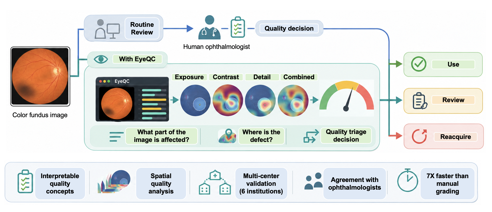
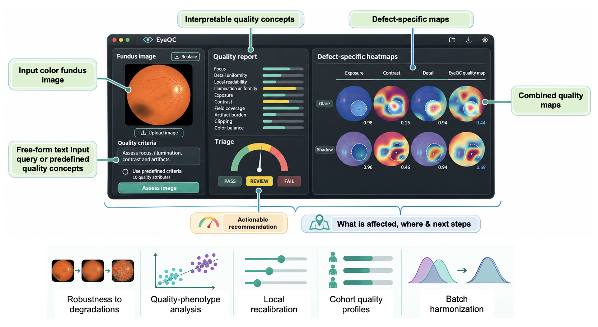

EyeQC
Concept-augmented retinal fundus image quality assessment: what is affected, where, and what to do next.


Reported results
21,091photographs from five cohorts, one frozen model
0.780–1.000AUROC; lowest under distribution shift (DeepDRiD)
0.70–0.78weighted κ with three ophthalmic graders on 80 photographs
208 msmedian CPU time per photograph